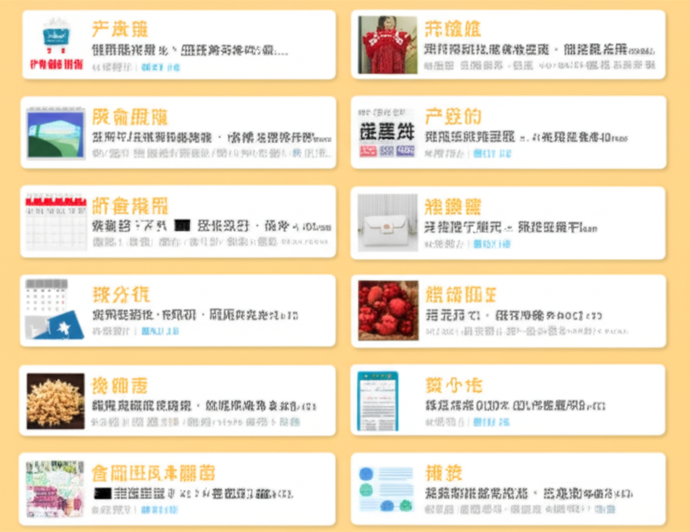

# 近期新聞與行事曆資訊整理
## 引言
近期新聞資訊繁雜，涵蓋健康、行事曆、BDSM活動、學校公告、財經、娛樂等各個面向。本篇文章將針對這些資訊進行整理歸納，方便讀者快速了解重要內容。
## 主體內容
### 第一點：行事曆與假期相關資訊
從提供的資訊來看，行事曆與假期安排是近期的熱門話題。
* **2026年行事曆預測：** 多家媒體開始報導關於2026年（115年）的行事曆預測，包含過年連假天數和全年請假攻略。雖然官方尚未正式公布，但已經引起許多人的關注，希望能提早規劃行程。
* **2025年端午節連假：** 確認2025年端午節有3天連假，這對於短途旅行或休息來說是不錯的安排。
* **學校行事曆：** 臺南市大橋國小等學校的網站提供了行事曆，方便家長了解學校活動和重要日期。
### 第二點：多元化的新聞內容
除了行事曆，新聞內容也相當多元。
* **健康資訊：** 早安健康網站提供了關於健康、瘦身等方面的資訊，例如透過搬家整理意外發現年輕時的衣服，進而激勵瘦身等經驗分享。
* **BDSM活動：** 台灣BDSM活動行事曆出現，顯示這個社群活動逐漸受到關注。
* **財經資訊：** 鉅亨網和經濟日報提供了台股新聞和財經行事曆，例如廣宇相關新聞和重要財經事件的排程。
* **娛樂八卦：** 樂天啦啦隊相關的八卦新聞，例如關於「偷吃富商當小三」的傳聞，在網路上引發討論。
### 第三點：教育與其他資訊
* **學校資源：** 國立屏東科技大學圖書館提供圖書、考古題、活動報名等資源，方便學生使用。
* **新聞平台：** NOWnews今日新聞作為一個網路原生新聞網站，提供即時新聞資訊。
## 結論
近期新聞資訊涵蓋生活各個層面，從行事曆安排到健康、財經、娛樂等，內容豐富多元。透過整理這些資訊，可以幫助讀者快速掌握重點，了解社會趨勢。持續關注相關資訊，有助於我們更好地規劃生活和做出決策。